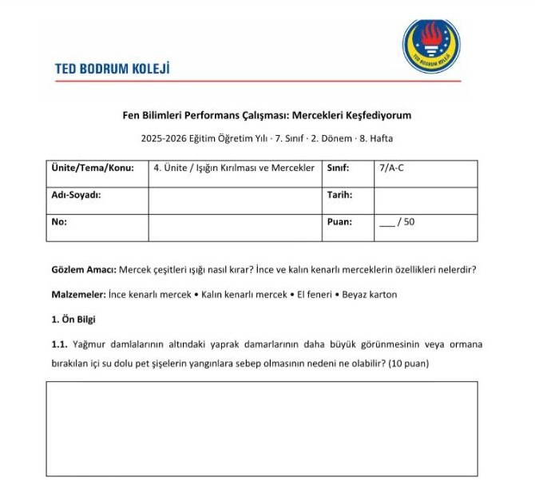

Öğretmen talimatı
Beş adımda Maarif Danışmanı
Belge yüklemenize gerek yok. Program, Ortak Metin ve okulun şablonu Gem'in içinde.
1. Gem'i açın
- Bilgisayarda Google AI Pro hesabınızla giriş yapın. Gemini'da hesap adınızın altında "Pro" yazmalı.
- Maarif Danışmanı – Fen Bilimleri
- Mesaj kutusunun altındaki model seçicide Pro'yu seçin. Her yeni sohbette kontrol edin.
2. Programla ilgili sorun
Kısa kod yazabilirsiniz: 5.3.2, FB.5.3.2. olarak anlaşılır. Aynı sohbette devam ederseniz "bu çıktı" dediğinizde önceki çıktı anlaşılır.
5.3.2 numaralı öğrenme çıktısı için ölçülebilir öğrenci performanslarını ve anahtar kelimeleri listeler misin?
Bu öğrenme çıktısı için MEB kaç ders saati ve hangi öğrenme yaşantılarını öneriyor?
Bu çıktı için 2 ders saatlik bir ders planı hazırla. Sınıfımda 24 öğrenci var, laboratuvar var.
Aşağıdaki etkinliğimi programa uygunluk açısından kontrol et: [etkinliği yapıştırın]
Programda ders saati ünite düzeyinde verilir. Gem çıktıya düşen süreyi "[Genel öneri]" etiketiyle önerir; o kısım programdan değil, Gem'in kendi önerisidir.
3. Çalışma kâğıdı isteyin
Yeni bir sohbet açın ve tek mesajda şunları yazın: öğrenme çıktısı, ders saati, sınıf/şube, dönem ve hafta, toplam puan, elinizdeki malzemeler.
FB.7.4.2 için 2 ders saatlik çalışma kâğıdı hazırla. Sınıf 7/A-C, 2. dönem 8. hafta, toplam 50 puan, 2025-2026 eğitim öğretim yılı. Laboratuvarda ince ve kalın kenarlı mercekler, el feneri ve beyaz karton var.
Yaklaşık 1–3 dakika sürer. Yanıtta bir DOCX dosya kartı ve bir Öğretmen Notu gelir.
4. İndirin
- Dosya kartını açın ve sağ üstteki İndir simgesine tıklayın. Google Dokümanlar'da açmak için Drive'a aktar seçeneğini kullanın.
- Dosya kartı çıkmazsa aynı sohbette şunu yazın:
.docx dosyası olarak ver.
- Öğretmen Notu (cevap anahtarı, kodlar, puanlama) sohbette kalır, öğrenciye verilmez.

5. Yazdırmadan önce kontrol edin
- Öğrenme çıktısı kodu ve süreç bileşenleri programla aynı mı?
- Sorular sınıf düzeyine ve programdaki sınırlılıklara uyuyor mu?
- Tablo başlıkları ve kutular yönergelerle eşleşiyor mu?
- Puanlar mantıklı dağılmış mı?
- Değişken bilinçli olarak değiştirilip ölçülmüyorsa çalışmaya "deney" değil "bilimsel gözlem" denmiş mi?
Unutmayın
- Öğrenci bilgisi yazmayın. Ad, not veya sağlık bilgisi girmeyin. "2 kaynaştırma öğrencisi var" demek yeterli.
- Konu değişince yeni sohbet açın. Belgeler her sohbette hazırdır.
- Pro olmayan hesapta çalışmaz. Şablon tutmaz ve önceki soru unutulur.